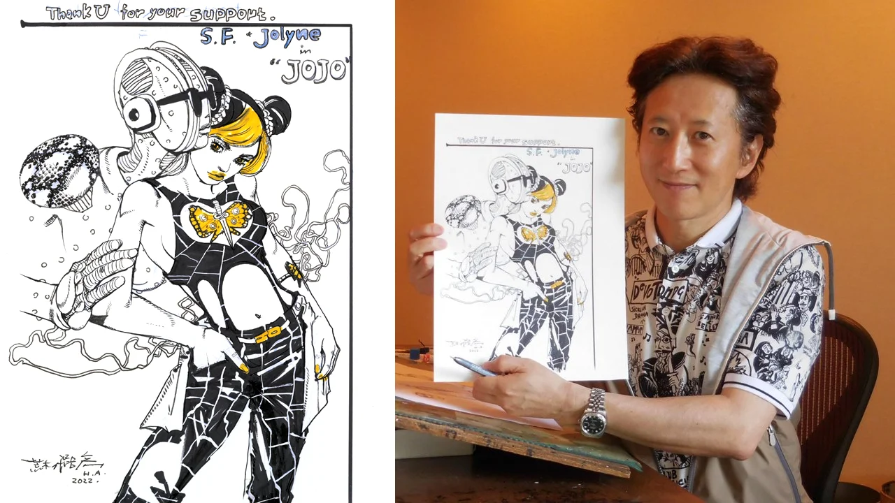

Hirohiko Araki

Hirohiko Araki, the creator of Jojo's Bizarre Adventure
Hirohiko Araki is a renowned Japanese manga artist and the creator of the widely popular manga series "Jojo's Bizarre Adventure." He was born on June 7, 1960, in Sendai, Japan.
Timeline of Araki's Manga Series:
- 1983: "Buso Poker" (Debut work) - Araki's first published work, "Buso Poker," marked the beginning of his career as a manga artist.
- 1987: "Baoh: The Visitor" (One-shot) - "Baoh: The Visitor" is a one-shot manga that showcases Araki's unique storytelling and art style.
- 1987 - Present: "Jojo's Bizarre Adventure" (Ongoing) - "Jojo's Bizarre Adventure" is Araki's most famous and long-running manga series, known for its iconic characters and inventive battles.
- 2012 - 2013: "Kochikame x Jojo's Bizarre Adventure" (Crossover) - This crossover between "Kochira Katsushika-ku Kameari Kōen-mae Hashutsujo" (Kochikame) and "Jojo's Bizarre Adventure" delighted fans of both series.
- 2018 - 2019: "Rohan at the Louvre" (One-shot) - Araki's "Rohan at the Louvre" is a one-shot manga that brings his unique artistry to a different setting and narrative.